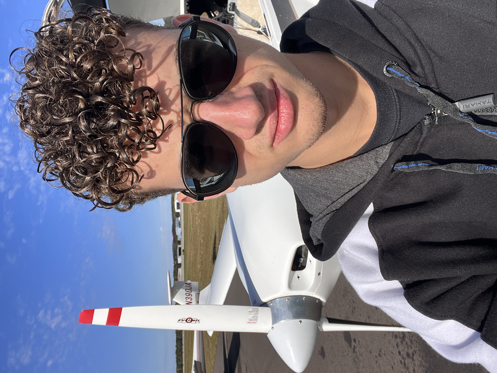

My Portfolio
About Me
Education
University of Detroit Mercy - Electrical Engineering, BEE
Graduating December 2026
Relevant Coursework
Circuits I & II
Digital Logic
Signals and Systems
Introduction to Microcontrollers
Electronic Systems
Electromechanical Energy Conversion
Control Systems
Hardware & Software Integration
Digital Signal Processing
Senior Design I & II
Technical Writing


Skills
Hardware: Digital Multimeter, Oscilloscope, Function Generator, Arduino and ARM MCUs, Raspberry Pi
Software and Simulation Tools: MATLAB, Simulink, KiCad, LTSpice, Python, C++, Embedded C, ROS 2, PyTorch, Git, Bash
Interfaces and Protocols: UART, I2C, SPI, SCI, USB, GPIO, Ethernet, Quadrature Encoder Interface (QEI)
Hobbies
Outside of engineering, I am a flight simulator enthusiast who enjoys exploring the virtual skies in Microsoft Flight Simulator 2024. I also enjoy flying my DJI Air 2S drone in nature whenever I want to disconnect. In addition, I like playing electric guitar and cultivating a vegetable garden, both of which give me a healthy balance to my technical work!
Contact Me
Grosse Pointe Woods, MI, USA